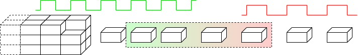

Clock Domains ☆
Synchronous design is a Good Thing
- Simplifies RTL design
- May be easier to think about state diagrams
- Simplifies debugging – can take a ‘global’ view
of state
- Tool chains optimised for such
However it is not always possible to have one clock across an SoC.
- Synchronous clock distribution increasingly difficult.
- Blocks may work optimally at different frequencies:
- May be IP from different vendors
- Some I/O may require specific frequencies.
Metastability
A model flip-flop: ball rolling between wells.
- The flip-flop has three stable positions: ‘0’,
‘1’ and a metastable position
‘half-way’
between. (There must be a flat
‘summit’ somewhere.)
- Violating set-up/hold conditions can result in the flip-flip entering
the metastable state.
- In principle the flip-flop can stay metastable indefinitely
- but if it starts to resolve one way, positive feedback pushes
it further in that direction.
- The probability of remaining metastable decreases
exponentially with time.
The dangers in a metastable state lie in that it can be interpreted as
different values by different inputs, or at different times. A
possible metastable flip-flop should only go to one place.
Synchronisers

Let's assume we have an incoming signal with no timing relationship to
our local clock. We want so fix that: we need a synchroniser.
A typical synchroniser looks like this:
Operation is simple.
If the first flip-flop latches a valid level the second one copies
this one clock period later.
Else the first flip-flop may go metastable but has a whole clock
period to resolve to a digital state. As the violation is caused by an
input data transition the chosen state will determine whether the data
changed before or after the clock.
If determined that the data changed ‘after’ the clock then
it will be picked up on the next clock edge.
The first flip-flop probably doesn't remain metastable for a
whole clock period. The probability depends on the properties of the
flip-flop and the length of the clock period.
If the flip-flop doesn't resolve in time it will be forced to a
digital state on the next clock edge since the input has now
definitely had enough set-up time – but the second
flip-flop may go metastable if it was just resolving at the
inopportune moment. (The chance of this is
unlikely2.)
Paranoid designers may add more flip-flops. Each multiplies the
probability of remaining metastable by the same small number, thus if
(say) 1 in 106 is too high, go for 1 in 1012 , 1
in 1018 , etc. Each flip-flop (delay) also increases the
latency, of course.
There is no certain guarantee that this will always work.
However the probability of failure can be made very small.
[Remember that 3 GHz translates to 3×109
clocks/second or about 1019/century.]
Synchroniser flip-flops
Some cell libraries provide flip-flops specifically to address this
problem. They can still go metastable but they have a
‘steeper hill’ so they tend to resolve more quickly.
This is done by strengthening the gain internally, which makes them
slower (longer propagation delay) and probably raises power
consumption. Use them in the synchroniser role, if available,
otherwise stick to the ‘standard’ flip-flop.
Crossing clock domains
There are various possibilities for relationships between clocks.
- Synchronous circuits avoid this difficulty
- Isochronous circuits have a known, constant, phase relationship.
- Maybe with blocks with harmonic frequencies.
- This may be exploited (with care!) in inter-block communication.
- Asynchronous clock sources cause problems!
- Sending signals between asynchronous domains.
is impossible with 100% reliability.
- At some stage a flip-flop set-up/hold constraint will be
violated.
- We can make the probability of failure very
small†.
There is also the need for arbitration: which receiver
cycle did the data arrive in?

†Like very, very very small.

Synchronisation introduces latency. The probability of error decreases
(exponentially) with the time allowed to resolve any
metastability. This also slows down the communications.
The details may vary and there may be the possibility to optimise a
bit but the point to note is that the complete handshake needs
to synchronise twice – once on its way into each clock
domain – so the overall cycle time is slow. The exact latency
may vary depending on the clock's frequencies and phase difference.
Optimisation?
Removing the flip-flops delaying
a⇒b
and
w⇒x
would reduce the cycle
time. ** DANGER **
If, as is likely,
w (for
example) is generated from combinatorial logic it could glitch to the
wrong value during evaluation. If such a glitch is captured by the
other clock, all sorts of problems may occur! The flip-flops filter
out any glitches.
Pragmatically
There is no need to synchronise every signal crossing a
boundary explicitly. If the timing is controlled only data validity
needs to be synchronised and any dubiously-timed data recaptured
during the synchronisation.
If the request is synchronised, accompanying data will have had plenty
of time to arrive.
When crossing a clock boundary, there is always:
- some latency
- a chance of failure due to persistent metastability
- small: may be reduced by adding extra flip-flops
- special flip-flops which resolve faster may be available
(though not from logic synthesis!)
Some techniques for data domain clock-crossing
Synchronisers introduce latency and may ‘cripple’
performance:
Various solutions are possible, depending on requirements & complexity.
Synchronising every item: low bandwidth.
Buffer ‘packets’ of items: longer latency, higher bandwidth.

Read/write FIFO: low(ish) latency,
high bandwidth — more complex.
More buffers plus FIFO reduce waiting time: more complex still!
- Synchronising individual items independently is slow if there is
much to transfer: the latency is reflected in the bandwidth.
- Items may be ‘batched up’ into a buffer (takes some
time) and the whole lot synchronised together. This can be useful
in block transfers.
- With a stream of items the synchronisation latency of all but the
first item can be (partially?) hidden under the latency of the
first. The FIFO accepts items into a store synchronised with the
transmitter clock; these are verified separately internally and read
out using the receiver clock. When the buffer is partially full the
bandwidth is limited by the slower of the two clocks.
- Mechanisms may be combined, or others imagined …
Two modules at the same frequency with a phase difference
A common case met, for example, with an
SDRAM
interface.
SDRAM is manufactured using different process steps from logic chips
and is therefore supplied as separate dice. This means that there is
often a significant distance for signals to travel – e.g. across
a PCB – which causes a consequential delay, notably in
the phase of the returned data.
The SDRAM controller (at the logic end) therefore transmits its clock
to the SDRAM which uses that reference internally and sends a
reference signal back … which suffers a further delay, of
course.
The upshot is that the frequency data rate of returned data is
exactly known, but its phase is not. The data is first captured using
the returned clock reference and then resynchronised to the
internal phase through a short buffer.
As an auxiliary note, the SDRAM interface may run at a multiple of the
SDRAM controller's internal clock frequency to provide a greater interface
bandwidth but this will be an integer multiple with appropriately
managed phase.
It's also now common to use both clock edges as strobes
on the interface side to provide Double Data Rate
(DDR).
Two modules at the ‘same’ frequency – with
independent clocks
Sometimes it is expedient to have communications between units with
notionally the ‘same’ clock frequency although they have
different clock sources†. Examples may include
synchronous serial communication such as
PCIe
or S-ATA.
However, no two clocks will exactly match so one end of
the link will be faster than the other.
A mechanism to allow for this disparity is for the transmitter to
insert ‘comma’ symbols into the communications stream.
These carry no data, hence imposing a small overhead. The receiver
maintains a FIFO of incoming symbols which it is synchronising to its
own clock. If its clock is a little slower the FIFO will gradually
fill; if its clock is a little faster the FIFO will gradually
empty. When a comma symbol is seen, if the FIFO is getting close to
full the comma is discarded, saving some time and catching up;
conversely, if the FIFO is close to empty the comma allows the
receiver a slight pause. In this way the FIFO can be kept close to
half-full at all times and the communication maintained seamlessly.
†The jargon term is “plesiochronous”.
Buffering
A circuit can pass one ‘thing’ per clock cycle to another
circuit in the same clock domain.
Synchronising latency will apply to every ‘thing’ passed
across an interface between clock domains. This reduces the
communication bandwidth considerably (in things/cycle).
Here are a couple of (related) techniques to achieve higher bandwidth
across the interface.
Pack many bytes into a ‘thing’. Fill up a
‘bucket’ (RAM) of data then signal its transfer at the
end. There is one synchronisation penalty for the bucket-load which is
shared by all the data. The disadvantage of this is that the latency
is increased because the bucket must be filled then the transfer
requested, so the first datum takes longer to be received (although
they come close together after that.
As above but double buffer. Fill up a bucket and notify the receiver
that it's ready. Whilst that is synchronising and being emptied, fill
up the next one. The disadvantage is that more (independent) RAMs are
needed; the advantage is increased bandwidth, closer to the maximum
rate (which is the slower of the corresponding processes).
A decoupling FIFO can extend the concept further. Conceptually
this is a bit harder to conceive. Think of a dual-port RAM (you could
build it out of flip-flops) where the transmitter writes to successive
locations and the receiver subsequently reads them at its own rate.
Every time a write completes a ‘counter’ is incremented
(Tx clock) and when a read completes it is decremented (Rx clock).
The control logic does need a synchroniser but synchronisation is not
necessary every cycle: for example if the FIFO contains four data,
following a read it contains at least three (more if writes are
ongoing) so no need to check before reading the next one. This can be
complicated to build but can offer close to maximum throughput with
close to minimum latency.
Back to timing closure.
Forwards to time stealing.
Up to Timing & Clocking.